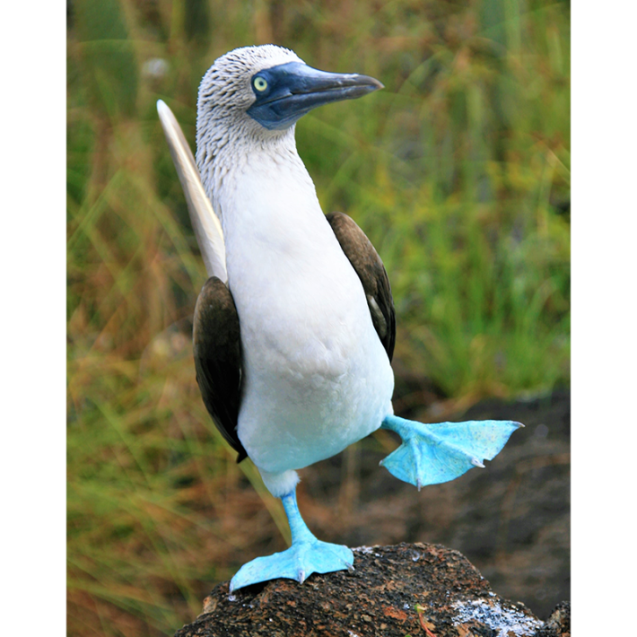

Iwasn’t fazed one bit as the tequila hit the table for the third time in an hour.
You see, while I wore the name tag Matt Kaplan, Science Correspondent at The Economist, I had once been a part of this tribe. Long ago they welcomed me as one of their own. I had wandered with them in the desert, shared their meals, and labored alongside them under the beating sun to pluck bones from the earth. Yes, I had been a paleontologist. The tequila was there from day one.
I had spent years staring at fossils at the University of California. My lab at Berkeley used tequila to make poor man’s margaritas with Minute Maid Lemonade in the field. They may not sound like much, but after spending a day in the scorching heat, sifting through sediment for the teeth of rodents that died a million years ago, kicking back with one of these drinks under the stars was a great way to relax. Unfortunately, as the shots were poured this time—in a noisy bar near the 72nd annual meeting of the Society of Vertebrate Paleontology—nobody at my table was even remotely relaxed. I quietly removed my press pass and name tag to avoid reminding my present company that I was not, in fact, part of their tribe any longer.
“She’ll ruin us,” hissed one of them as his hand clenched a shot glass.
Language too vile to publish here, referring to female genitalia, slipped off the tongue of another.
“It is contrary to everything that we know,” stated another with a cold and calm precision that I found decidedly disturbing amid all the anger. While this fury made me feel as if I had traveled back in time to the days when evolutionary theory was being shouted down by the Church, this was 2012. Moreover, this wasn’t anger from the religious right toward a liberal scientist. No, this was a blue-on-blue event. Science was attacking itself.
This violent reaction was not the way science was supposed to be functioning.
The conference was in Raleigh, North Carolina. The general presentations, where paleontologists talk about their findings, get asked questions by the audience, and then sometimes argue, were over for the day. London, five hours ahead, was asleep for the night. I took the opportunity to step out of the hotel into a cool and clear autumn evening for a light meal. Feeling refreshed from the break, I decided to visit the conference floor one last time before sequestering myself in my room and writing nonstop until midnight.
I came upon the poster session of the conference, where newbie scientists, mostly Ph.D. students, present findings that tend to be relatively minor. Journalists usually skip them. Not me.
Poster sessions are a bit like old-fashioned marketplaces where traders stand around trying to sell their wares—only, instead of traders pushing fruit, you have scientists pushing ideas. As I wandered past poster after poster with explanations of what the researcher did, why they did it, and what they found, the quiet of the hall was shattered by a sudden burst of shouting. I hurried over to find out what the commotion was about and, as I turned a corner, I saw a woman surrounded by a group of men.
The woman had blond hair and was in her 20s. The men were decades older and clearly very angry. I would later learn that she was a Ph.D. student named Alison Moyer. Behind her was an older woman with steel gray hair, whom I immediately recognized as Mary Schweitzer, a scientist who had created a lot of important controversy by suggesting that soft organic materials that ought to rot away quickly after death (like blood cells) can sometimes survive the test of time and endure within fossilized bone for us to find millions of years later. Standing quietly along the periphery of the growing crowd I also spotted Jack Horner, a legendary maverick in the paleontological community who, among other things, revealed evidence that dinosaurs were social, engaged in maternal care, and grew quickly like mammals.
Nasty language was increasingly emerging from the hostile crowd, and my curiosity about this poster was growing by the minute. I snuck around to the side to have a look and realized that, of course, this was another fight about color.
Working out what color dinosaurs were when they ruled the planet over 66 million years ago might not sound particularly important, but it has increasingly taken center stage at conferences during the past decade. The reason is because the colors found on an animal tell us a great deal about how that animal lives its life. Think about it. Poison arrow frogs have brilliant hues to communicate, “eat me at your peril.” Stick insects are a drab brown to help them trick predators into believing they are inedible twigs. Yet those are the simple examples. Birds take things to an entirely different level.

COLOR MATTERS:The debate over animal colors is important, as it tells scientists a great deal about how that animal lives its life. Male blue-footed boobies, for example, with the brightest and bluest feet, are in prime health, signaling their appeal to females. Photo by Femke van den Bos / Shutterstock.
Female blue-footed boobies always seek out males with the brightest and bluest feet. Why? Because booby immune systems rely upon the same chemical compounds found in their food to fight off diseases as they do to color their feet blue. A booby fighting an infection has to send these chemical compounds to its immune system rather than using them to brighten foot color. The females, being a rather discerning lot, use foot color to determine whether a given male is healthy enough to be worthy of breeding with.
Bluebirds, flamingos, pheasants, peacocks, toucans, and hundreds of other avian species use similar strategies. This matters because, while many dinosaurs like stegosaurus, triceratops, and diplodocus went extinct long ago, birds are the living relatives of velociraptor and Tyrannosaurus rex. Many paleontologists have argued that, since we know so much about how birds use color today, we should be able to use any color information that we can gather about dinosaurs to work out how they behaved, too.
“She’ll ruin us,” hissed one of the scientists as his hand clenched a shot glass.
Color in fur, feathers, and skin comes from tiny structures called melanosomes that are contained within the cells of these structures. Like red blood cells, these were thought to rot away shortly after animals die but, building on Schweitzer’s findings, scientists began to question whether this might not be true. In 2008, a group of researchers announced that they had found melanosomes in fossil feathers belonging to what can best be described as very late dinosaurs or very early birds. Those researchers noted that these melanosomes were arranged in interesting patterns and suggested that these patterns might indicate the color that the feather once had. This encouraged other labs to look closely at this and, suddenly, melanosomes were absolutely everywhere. Paper after paper was being published on the subject. Many of these articles came with artistic renderings of T.rex and its kin painted in vibrant hues reminiscent of bluebirds and peacocks that the most prominent journals were gobbling up and publishing on their covers.
Dozens of these scientists were gaining considerable prestige from all of this work. Indeed, their reputations hinged on it. So, any suggestion that what people were seeing were not melanosomes was going to be met with considerable resistance. Unfortunately for Schweitzer’s student Moyer—standing before me at the conference—this is exactly what she had found.
Moyer questioned whether the melanosomes being discovered might actually be something else. Advised by Schweitzer, who was well trained by Horner, Moyer was tasked with proving that what people were seeing were not in fact melanosomes. To explore this, she collected chicken feathers and buried them in fine sediment. This allowed the feathers to decompose in the way that many animals would before becoming fossils. She then collected the remains and studied them under her microscope. She made two important discoveries.
The first was that the microbes and the melanosomes overlapped each other both in size and in shape. She found this alarming, because paleontological papers have routinely argued for the presence of melanosomes based only upon the sizes and shapes of the fossilized objects in question. The second was that the melanosomes in her feathers were always embedded in the keratin of which the feather is made. The microbes, by contrast, grew across the surface. Most of the supposed melanosomes associated with fossil feathers have been distributed in dense mats over the surface of the feathers, rather than being embedded within them.
In short, Moyer was presenting evidence that powerful scientists in her field, who had achieved considerable prestige by publishing papers about color in extinct animals, were wrong. This was why Moyer was at the center of an angry mob. This was why everyone around me in the bar was seething. This was not why the paleontologists were drinking heavily—they do that anyway. Perhaps more importantly, this violent reaction was not the way science was supposed to be functioning.
Scientists are supposed to ask questions, test these questions with experiments to prove themselves wrong.
Sure, Moyer might have been wrong. Indeed, one of her critics had recently considered in a paper that what was being seen were bacteria. This notion was then discounted because of the clear patterns that the grains seemed to form. Several other researchers who were in the midst of the mob had also investigated the chemical properties of the melanosomes. None had found any indication that they were bacterial. Yet, to focus on whether Moyer was right or wrong misses an important point.
Scientists are supposed to ask questions about the world around them, test these questions with experiments to try to prove themselves wrong, and then present their results to their peers. When new findings contrast with older findings, scientists are supposed to write papers exploring why the findings create the contrast and run more experiments to study the matter. This structure of question, test, challenge, and present is known as the scientific method. It has been around for hundreds of years and is meant to make science function smoothly.
Unfortunately, it failed Moyer. Paleontologists at the time were just using shape and size to identify melanosomes in fossils. Her work revealed that this was a flawed approach because bacteria get preserved, too, and they have the same shape and size as melanosomes. Yes, we now know that melanosomes can be preserved in fossils, but lots of bacteria were incorrectly being counted as melanosomes when she presented her findings in 2012. Moyer should have been celebrated for revealing such a serious problem.
But she wasn’t. At the 2012 conference, I was stunned to see all of the men losing their minds at Moyer’s work, but I should not have been. Because this has all happened before.
Copernicus feared how the outside world would respond to his discovery that the Earth went around the sun, and hid his notes away in a desk drawer, just like Schweitzer tried to do. He kept them unpublished until he was so seriously ill that he was certain he would be dead before the Inquisition could come for him. Contrary to popular legend, Darwin did not really fear that the public would lynch him for his theory of evolution, so much as worry that the rest of the academic community would think less of him for coming up with such a wild idea. Even so, his concerns over being thought, as he put it in his own notes, “a complete fool” by other researchers played an important part in leading him to check and double-check his arguments for nearly two decades. It was not until he learned that his colleague Alfred Russell Wallace had come to the same evolutionary conclusions that he made the tough decision to publish. Others carefully managed their relations with the outside world. Galileo had to consider the church with every step that he made. Joseph Lister and Louis Pasteur had to constantly handle emotional reactions from both the government and the wider scientific community. They didn’t hide their findings, but political games were essential to their survival. Pasteur even turned to fraud.
Science is going to be critical for tackling the big challenges that our society faces. Solving the energy crisis, defeating cancer, countering climate change, feeding 8 billion people … the list is long. We need it operating at its best to confront these problems and, while science might look like a well-oiled machine spitting out findings to those glancing at it from the outside, it looks more like a clunky old engine prone to breakdown to those of us on the inside. It fills me with doubt. Can science defeat our big challenges? Yes. What remains unclear is whether it can do so in time. 
Adapted from I Told You So!: Scientists Who Were Ridiculed, Exiled, and Imprisoned for Being Right by Matt Kaplan. Copyright © 2026 by the author and reprinted by permission of St. Martin’s Publishing Group.
Lead image: Andrus Ciprian / shutterstock
Källförteckning
- Originalartikel: https://nautil.us/when-scientists-are-dinosaurs-1278622/